sector31 supernovae (27 total)
Each figure has three panels. The top panel shows the transient light curve, the middle panel shows the local background (estimated in an annulus), and the bottom panel shows a "background-model corrected" light curve. Details about the background model are in the README.
The vertical red line marks the time of discovery reported to TNS. Other useful metadata from TNS is in the figure title.
Note that the top and bottom panel are in magnitudes, while the middle panel is in differential flux units. The magnitudes are calibrated to the flux in the reference image used for image subtraction. Thus, flux from the host galaxy is included in these magnitudes.
3-sigma upper limits are plotted as triangles with no errorbars. A typical limiting magnitude is 19.6 in 30 minutes or 18.4 in 200 seconds (for low backgrounds).
The links allow you to download the light curve data as a text file.
More details in the README.
2020zre
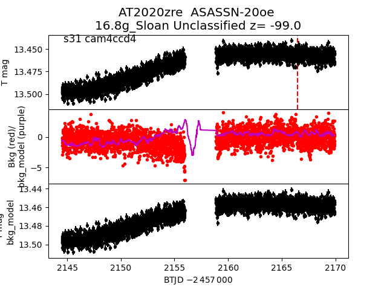
2020yhg
 2020yzm
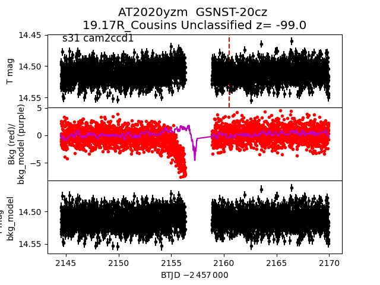
2020ymv
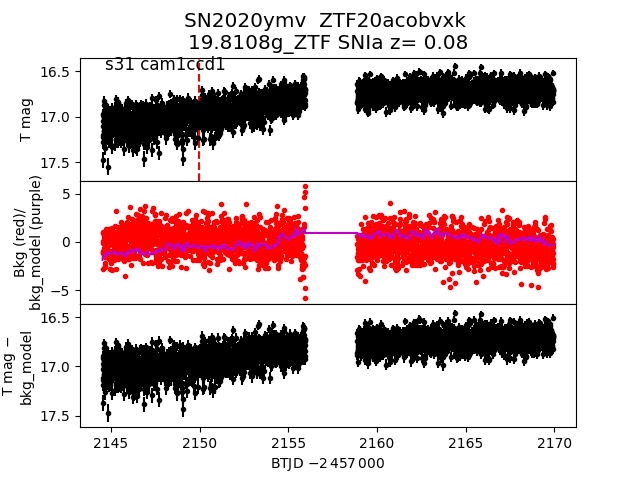
2020zjf
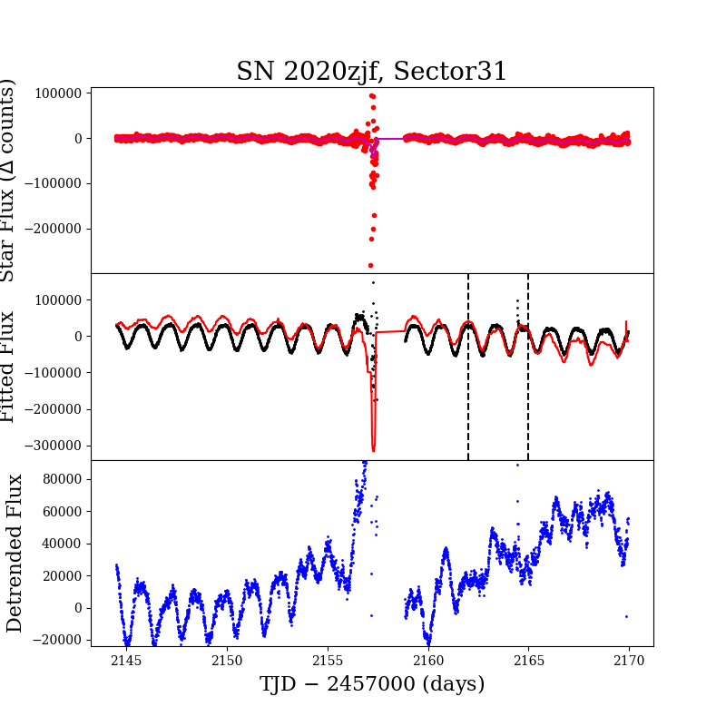
2020xyw
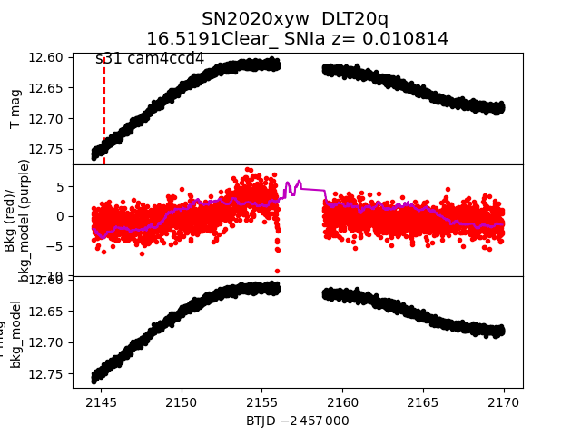
2020zbr
2020yzm
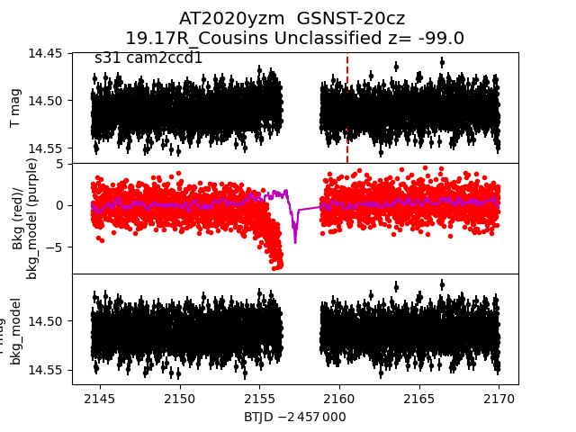
2020ymv
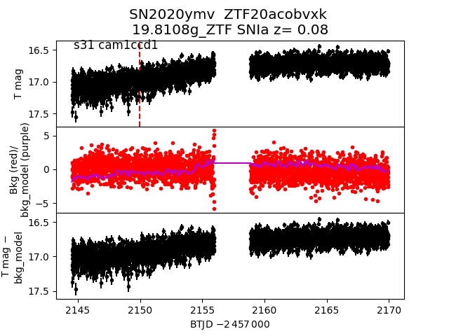
2020zjf
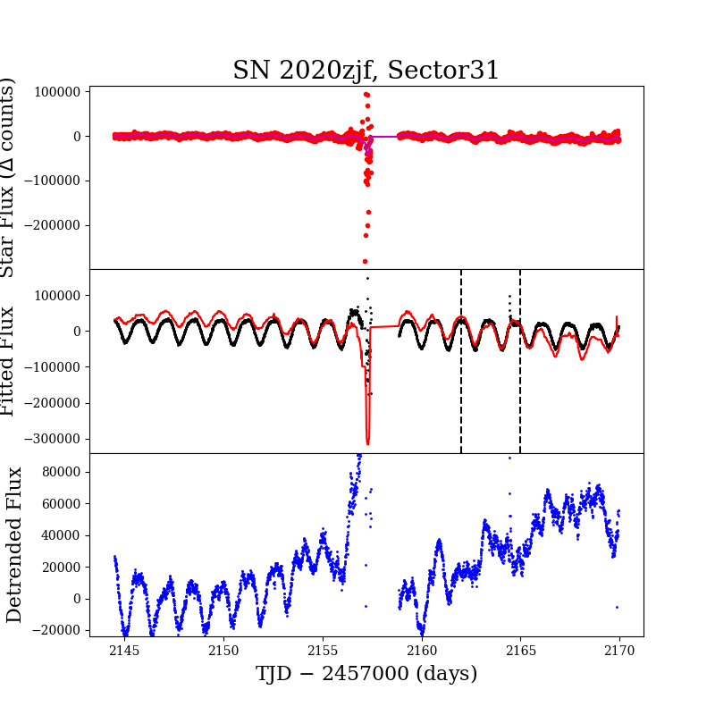
2020xyw
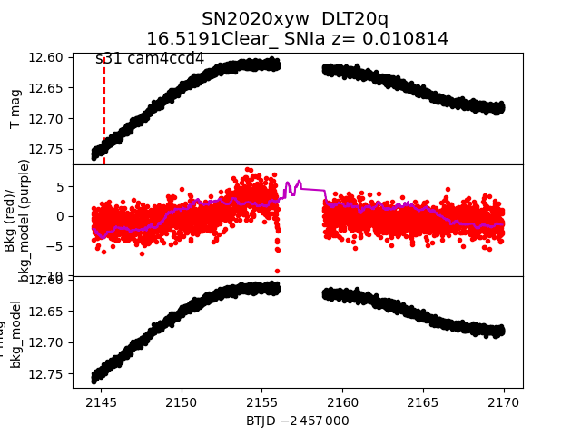
2020zbr
 2020yzw
2020yzw
 2020zbg
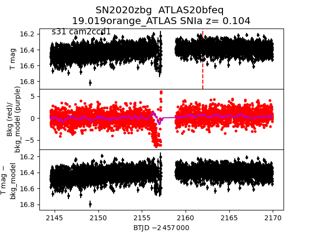
2020zbq
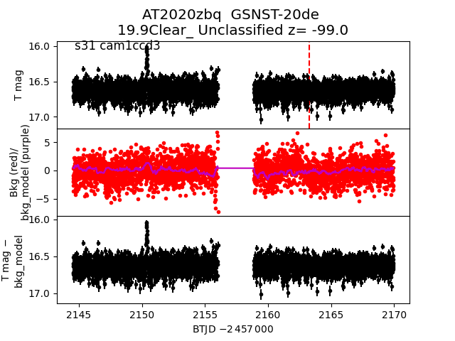
2020yxl
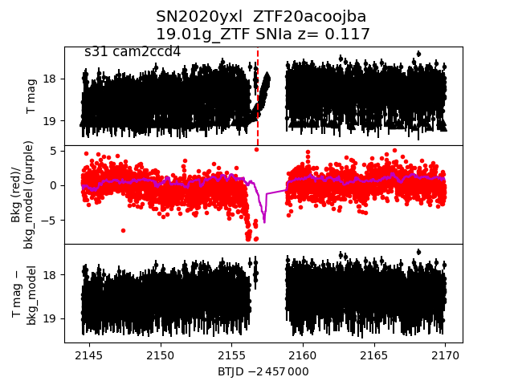
2020zjf
2020zbg
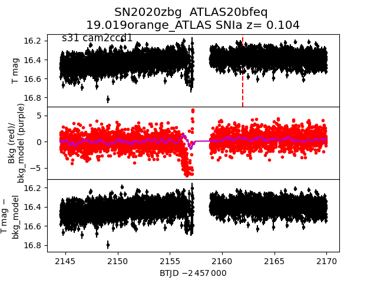
2020zbq
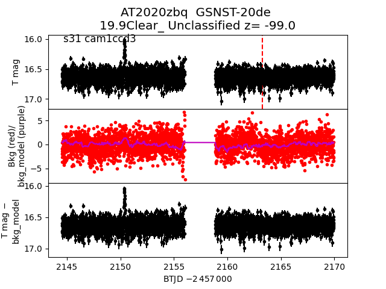
2020yxl
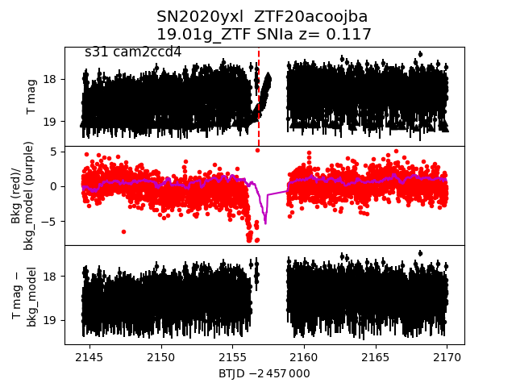
2020zjf
 2020ygv
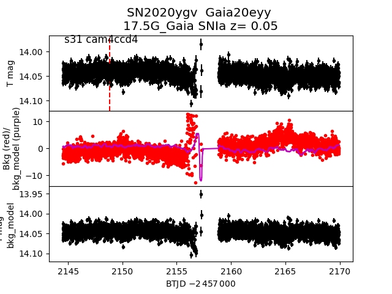
2020yzv
2020ygv
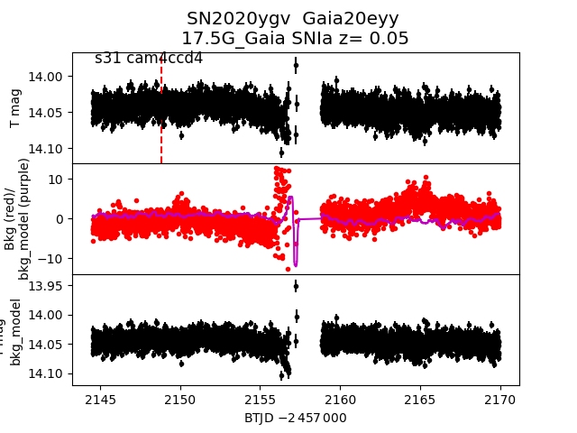
2020yzv
 2020zbs
2020zbs
 2020zqo
2020zqo
 2020zbv
2020zbv
 2020yzo
2020yzo
 2020zpi
2020zpi
 2020yef
2020yef
 2020aajf
2020aajf
 2020aavd
2020aavd
 2020zbu
2020zbu
 2020zbo
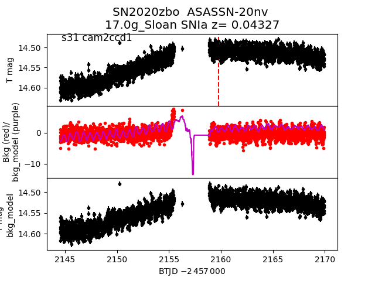
2020zbp
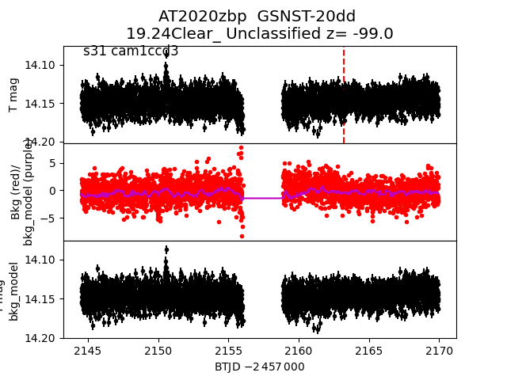
2020yst
2020zbo
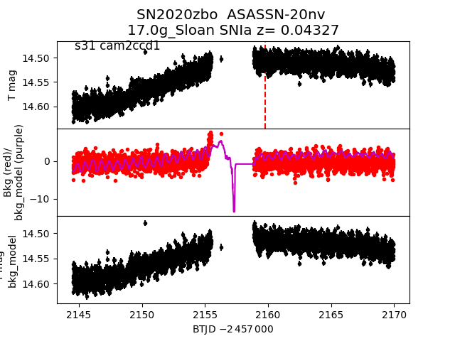
2020zbp
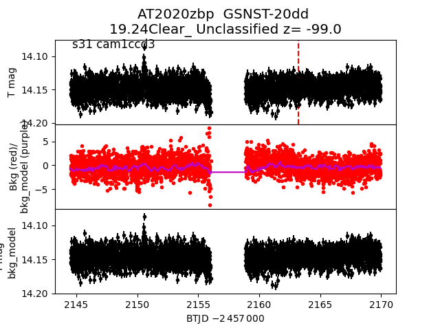
2020yst
 2020ykb
2020ykb